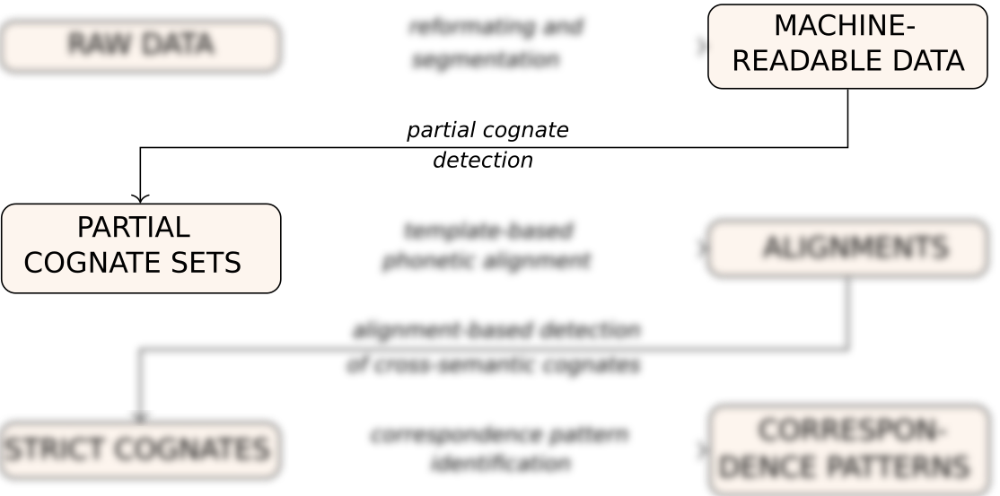
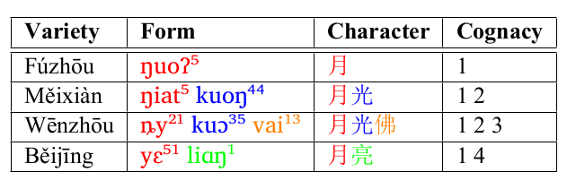
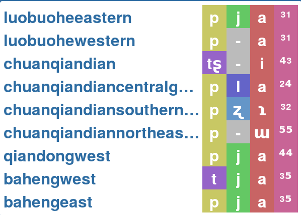
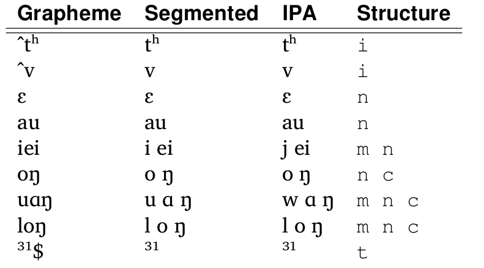
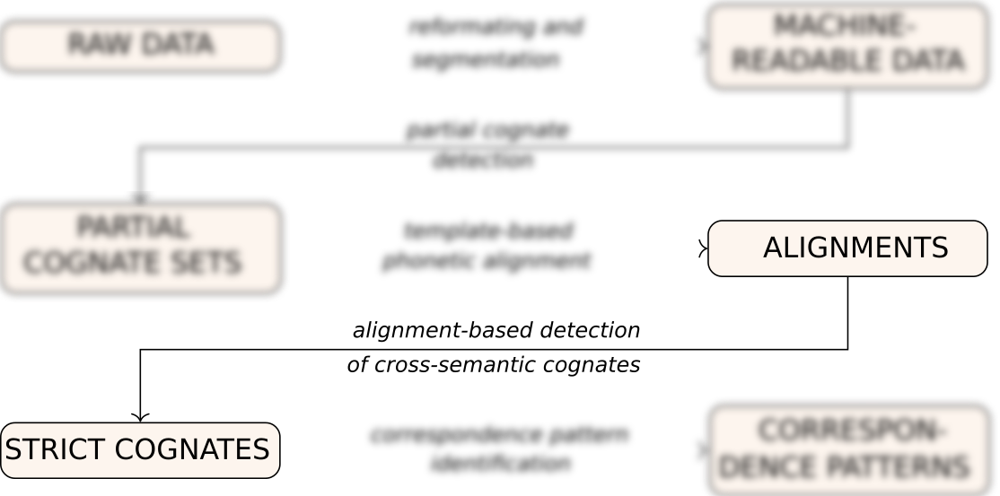
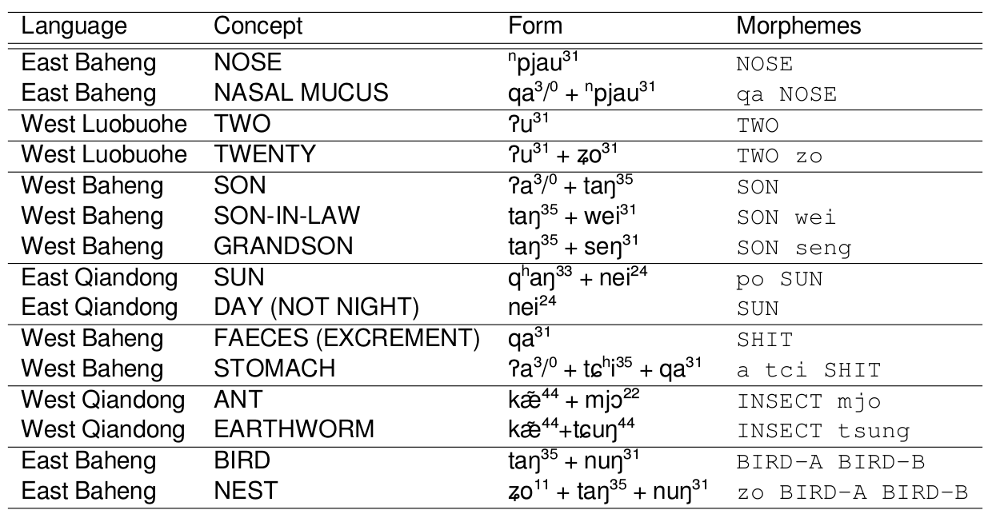
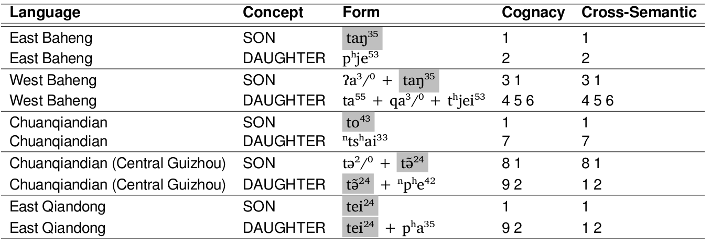
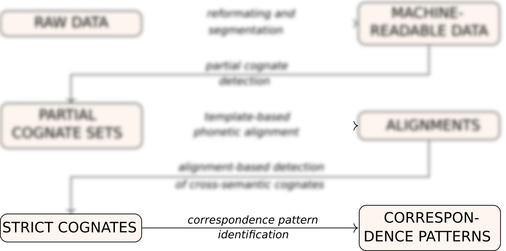
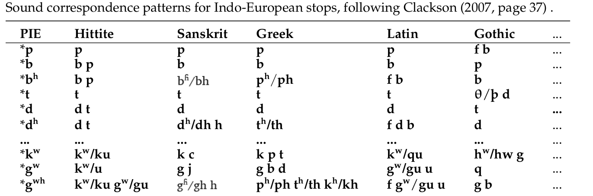

Grapheme \t IPA
č \t tʃ
ž \t dʒ
th \t tʰ
dh \t d̤
sh \t ʃ
a \t a
aa \t aː
tsj \t tɕ
la \t l a
CALC workflows
From raw data to machine-readable data
ID \t DOCULECT \t CONCEPT \t ENGLISH \t VALUE \t FORM \t TOKENS \t COGIDS
1 \t Baheng, east \t 七 \t SEVEN \t tsja³¹,tsjung⁴⁴ \t tsja³¹ \t tɕ a ³¹ \t
2 \t Baheng, east \t 七 \t SEVEN \t tsja³¹,tsjung⁴⁴ \t tsjung⁴⁴ \t tɕ u ŋ ⁴⁴ \t
3 \t Baheng, west \t 七 \t SEVEN \t tsjang⁴⁴ \t tsjang⁴⁴ \t tɕ a ŋ ⁴⁴ \t
4 \t Qiandong, east \t 七 \t SEVEN \t sjung⁵³ \t sjung⁵³ \t ɕ u ŋ ⁵³ \t
5 \t Qiandong, wesst \t 七 \t SEVEN \t sjung²² \t sjung²² \t ɕ u ŋ ²² \t
6 \t Baheng, east \t 月亮 \t MOON \t la⁰³lha⁵⁵ \t la⁰³lha⁵⁵ \t l a ³/⁰ + ɬ a ⁵⁵ \t
7 \t Baheng, west \t 月亮 \t MOON \t ʔa⁰³lha⁵⁵ \t ʔa⁰³lha⁵⁵ \t ʔ a ³/⁰ + ɬ a ⁵⁵ \t
8 \t Qiandong, east \t 月亮 \t MOON \t la⁴⁴la⁴⁴ \t la⁴⁴la⁴⁴ \t l a ⁴⁴ + l a ⁴⁴ \t
9 \t Qiandong, wesst \t 月亮 \t MOON \t pau¹¹la³³ \t pau¹¹la³³ \t p ɔ ¹¹ + l a ³³ \t
10 \t Baheng, east \t 星星 \t STAR \t la⁰³qang³⁵ \t la⁰³qang³⁵ \t l a ³/⁰ + q a ŋ ³⁵ \t
11 \t Baheng, west \t 星星 \t STAR \t qa⁰³qang³⁵ \t qa⁰³qang³⁵ \t q a ³/⁰ + q a ŋ ³⁵ \t
12 \t Qiandong, east \t 星星 \t STAR \t qei²⁴qei²⁴ \t qei²⁴qei²⁴ \t q ei ²⁴ + q ei ²⁴ \t
13 \t Qiandong, wesst \t 星星 \t STAR \t tei⁴⁴qei⁴⁴ \t tei⁴⁴qei⁴⁴ \t t ei - ⁴⁴ + q ei ⁴⁴ \t
CALC workflows
From segmented words to computer-inferred cognates

CALC workflows
From segmented words to computer-inferred cognates

CALC workflows
From segmented words to computer-inferred cognates
List et al. (2016). Using sequence similarity networks to identify partial cognates in multilingual wordlists. In Proceedings of the 54th Annual Meeting of the Association for Computational Linguistics (Vol. 2, pp. 599-605).
CALC workflows
From segmented words to computer-inferred cognates
ID \t DOCULECT \t CONCEPT \t ENGLISH \t VALUE \t FORM \t TOKENS \t COGIDS
1 \t Baheng, east \t 七 \t SEVEN \t tsja³¹,tsjung⁴⁴ \t tsja³¹ \t tɕ a ³¹ \t 3
2 \t Baheng, east \t 七 \t SEVEN \t tsja³¹,tsjung⁴⁴ \t tsjung⁴⁴ \t tɕ u ŋ ⁴⁴ \t 3
3 \t Baheng, west \t 七 \t SEVEN \t tsjang⁴⁴ \t tsjang⁴⁴ \t tɕ a ŋ ⁴⁴ \t 3
4 \t Qiandong, east \t 七 \t SEVEN \t sjung⁵³ \t sjung⁵³ \t ɕ u ŋ ⁵³ \t 3
5 \t Qiandong, wesst \t 七 \t SEVEN \t sjung²² \t sjung²² \t ɕ u ŋ ²² \t 3
6 \t Baheng, east \t 月亮 \t MOON \t la⁰³lha⁵⁵ \t la⁰³lha⁵⁵ \t l a ³/⁰ + ɬ a ⁵⁵ \t 1908 1907
7 \t Baheng, west \t 月亮 \t MOON \t ʔa⁰³lha⁵⁵ \t ʔa⁰³lha⁵⁵ \t ʔ a ³/⁰ + ɬ a ⁵⁵ \t 1909 1907
8 \t Qiandong, east \t 月亮 \t MOON \t la⁴⁴la⁴⁴ \t la⁴⁴la⁴⁴ \t l a ⁴⁴ + l a ⁴⁴ \t 1908 1907
9 \t Qiandong, wesst \t 月亮 \t MOON \t pau¹¹la³³ \t pau¹¹la³³ \t p ɔ ¹¹ + l a ³³ \t 1910 1907
10 \t Baheng, east \t 星星 \t STAR \t la⁰³qang³⁵ \t la⁰³qang³⁵ \t l a ³/⁰ + q a ŋ ³⁵ \t 1874 1870
11 \t Baheng, west \t 星星 \t STAR \t qa⁰³qang³⁵ \t qa⁰³qang³⁵ \t q a ³/⁰ + q a ŋ ³⁵ \t 1872 1870
12 \t Qiandong, east \t 星星 \t STAR \t qei²⁴qei²⁴ \t qei²⁴qei²⁴ \t q ei ²⁴ + q ei ²⁴ \t 1872 1870
13 \t Qiandong, wesst \t 星星 \t STAR \t tei⁴⁴qei⁴⁴ \t tei⁴⁴qei⁴⁴ \t t ei - ⁴⁴ + q ei ⁴⁴ \t 1871 1870
CALC workflows
From cognates to alignments
CALC workflows
From cognates to alignments

Phonetic alignment techniques are well-known in historical linguistics and have been applied for quite some time now.
CALC workflows
From cognates to alignments
We propose Template-Based Alignments as an alternative to semi-automatically computed alignments.
Languages with a rather restricted syllable structure can usually be aligned in a very consistent way by simply using a template.
A typical Chinese syllable, for example, consists of initial, medial, nucleus, coda and tone (Wang 1996). Once we know the individual template of a Chinese word, we can easily align it with any other word, as long as we know the template.
CALC workflows
From cognates to alignments
CALC workflows
From cognates to alignments

CALC workflows
From cognates to alignments
ID \t DOCULECT \t ENGLISH \t TOKENS \t STRUCTURE \t ALIGNMENT \t COGIDS
1 \t Baheng, east \t SEVEN \t tɕ a ³¹ \t i n t \t tɕ a - ³¹ \t 3
2 \t Baheng, west \t SEVEN \t tɕ a ŋ ⁴⁴ \t i n c t \t tɕ a ŋ ⁴⁴ \t 3
3 \t Qiandong, east \t SEVEN \t ɕ u ŋ ⁵³ \t i n c t \t ɕ u ŋ ⁵³ \t 3
4 \t Qiandong, wesst\t SEVEN \t ɕ u ŋ ²² \t i n c t \t ɕ u ŋ ²² \t 3
5 \t Baheng, east \t MOON \t l a ³/⁰ + ɬ a ⁵⁵ \t i n t + i n t \t l a ³/⁰ + ɬ a ⁵⁵\t 1908 1907
6 \t Baheng, west \t MOON \t ʔ a ³/⁰ + ɬ a ⁵⁵ \t i n t + i n t \t ʔ a ³/⁰ + ɬ a ⁵⁵ \t 1909 1907
7 \t Qiandong, east \t MOON \t l a ⁴⁴ + l a ⁴⁴ \t i n t + i n t \t l a ⁴⁴ + l a ⁴⁴ \t 1908 1907
8 \t Qiandong, wesst\t MOON \t p ɔ ¹¹ + l a ³³ \t i n t + i n t \t p ɔ ¹¹ + l a ³³ \t 1910 1907
9 \t Baheng, east \t STAR \t l a ³/⁰ + q a ŋ ³⁵ \t i n t + i n c t \t l a ³/⁰ + q a ŋ ³⁵ \t 1874 1870
10 \t Baheng, west \t STAR \t q a ³/⁰ + q a ŋ ³⁵ \t i n t + i n c t \t q a ³/⁰ + q a ŋ ³⁵ \t 1872 1870
11 \t Qiandong, east \t STAR \t q ei ²⁴ + q ei ²⁴ \t i n t + i n t \t q ei ²⁴ + q ei - ²⁴ \t 1872 1870
12 \t Qiandong, wesst\t STAR \t t ei - ⁴⁴ + q ei ⁴⁴\t i n t + i n t \t t ei - ⁴⁴ + q ei - ⁴⁴\t 1871 1870
CALC workflows
From alignments to strict, cross-semantic cognates

CALC workflows
From alignments to strict, cross-semantic cognates
For a realistic analysis, we need to identify cognates not only within the same meaning slot, but across different concepts.
However, our algorithm for automatic congate detection designed to search words with the same meaning.
Therefore, we need to find cross-semantic partial (=normal) cognates in a second stage.
CALC workflows
From alignments to strict, cross-semantic cognates
For this task, we employ a new algorithm to merge cognates in our data into larger groups.
The basic idea is to check if two alignments are compatible with each other, and to fuse them to form a bigger alignment, if this is the case.
As a side effect, all words we identify in this way are strictly cognate, since our procedure does not allow to identify a morpheme in the same language to be cognate if this does not show the exact same form.
CALC workflows
From alignments to strict, cross-semantic cognates

CALC workflows
From alignments to strict, cross-semantic cognates

CALC workflows
From alignments to strict, cross-semantic cognates
ID \t DOCULECT \t ENGLISH \t TOKENS \t STRUCTURE \t ALIGNMENT \t CROSSIDS \t COGIDS
1 \t Baheng, east \t SEVEN \t tɕ a ³¹ \t i n t \t tɕ a - ³¹ \t 3 \t 3
2 \t Baheng, west \t SEVEN \t tɕ a ŋ ⁴⁴ \t i n c t \t tɕ a ŋ ⁴⁴ \t 3 \t 3
3 \t Qiandong, east \t SEVEN \t ɕ u ŋ ⁵³ \t i n c t \t ɕ u ŋ ⁵³ \t 3 \t 3
4 \t Qiandong, wesst\t SEVEN \t ɕ u ŋ ²² \t i n c t \t ɕ u ŋ ²² \t 3 \t 3
5 \t Baheng, east \t MOON \t l a ³/⁰ + ɬ a ⁵⁵ \t i n t + i n t \t l a ³/⁰ + ɬ a ⁵⁵\t 1908 351 \t 1908 1907
6 \t Baheng, west \t MOON \t ʔ a ³/⁰ + ɬ a ⁵⁵ \t i n t + i n t \t ʔ a ³/⁰ + ɬ a ⁵⁵ \t 41 351 \t 1909 1907
7 \t Qiandong, east \t MOON \t l a ⁴⁴ + l a ⁴⁴ \t i n t + i n t \t l a ⁴⁴ + l a ⁴⁴ \t 1908 351 \t 1908 1907
8 \t Qiandong, wesst\t MOON \t p ɔ ¹¹ + l a ³³ \t i n t + i n t \t p ɔ ¹¹ + l a ³³ \t 1910 351 \t 1910 1907
9 \t Baheng, east \t STAR \t l a ³/⁰ + q a ŋ ³⁵ \t i n t + i n c t \t l a ³/⁰ + q a ŋ ³⁵ \t 1874 1834 \t 1874 1870
10 \t Baheng, west \t STAR \t q a ³/⁰ + q a ŋ ³⁵ \t i n t + i n c t \t q a ³/⁰ + q a ŋ ³⁵ \t 1872 1834 \t 1872 1870
11 \t Qiandong, east \t STAR \t q ei ²⁴ + q ei ²⁴ \t i n t + i n t \t q ei ²⁴ + q ei - ²⁴ \t 1872 1834 \t 1872 1870
12 \t Qiandong, wesst\t STAR \t t ei - ⁴⁴ + q ei ⁴⁴\t i n t + i n t \t t ei - ⁴⁴ + q ei - ⁴⁴\t 1234 1834 \t 1871 1870

CALC workflows
From strict cognates to sound correspondence patterns

CALC workflows
From strict cognates to sound correspondence patterns
Ratliff et al. (2010). Hmong-Mien language history. Pacific Linguistics (Page 57)
CALC workflows
From strict cognates to sound correspondence patterns